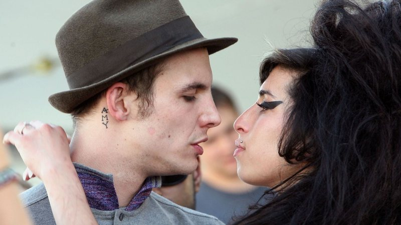

Amy Winehouse nasceu no Chase Farm Hospital, em Enfield, ao norte de Londres, em 14 de setembro de 1983.[4] O seu pai, Mitchell Winehouse, trabalhava como instalador de painéis e, posteriormente, tornou-se motorista de táxi e cantor amador; a sua mãe, Janis, era farmacêutica.[5] Descendente de judeus, ela tinha um irmão mais velho, Alex Winehouse, nascido em 1980.[6][7] A jovem iniciou os estudos primários aos cinco anos de idade, na Osidge Primary School, na qual o seu irmão também estudava. Lá, foi matriculada em aulas de ballet e conheceu aquelas que se tornariam suas grandes amigas, Juliette Ashby e Lauren Gilbert.[4][8] Aos domingos, estudava os princípios fundamentais do judaísmo e, apesar de não se ter tornado uma pessoa fortemente religiosa, sentia-se parte da comunidade judaica.[6] Janis descreveu-a como uma criança com forte personalidade, bastante ativa e curiosa, porém tímida.[9] Desde os primeiros anos de Winehouse, a música fez parte do seu cotidiano, especialmente o jazz, visto que muitos de seus tios eram músicos profissionais do gênero, assim como a sua avó paterna, Cynthia, que mantinha um relacionamento com o saxofonista e proprietário de um clube de jazz Ronnie Scott.[10] Além disso, Mitch cantava para ela obras de veteranos do gênero como Frank Sinatra e Ella Fitzgerald, o que acentuou a sua paixão pela música.[9] Os seus professores chegaram a reclamar da garota, que não parava de cantar mesmo durante as aulas.[11]
Apesar do aparente ambiente harmonioso de seu lar, Winehouse passou boa parte de sua infância e adolescência presenciando a infidelidade conjugal do seu pai. Numa entrevista concedida à British Broadcasting Corporation, Mitch revelou que, em 1983, iniciou um caso amoroso com uma colega de trabalho chamada Jane, que se tornou sua esposa em 1996.[7] A relação era do conhecimento da família em geral, até das crianças, as quais se referiam a Jane como "a mulher do papai no trabalho".[12] Embora apenas se tenha separado de Janis quando Winehouse completou nove anos, Mitch sempre foi ausente.[8] O divórcio foi concretizado em 1992 e, depois disso, Winehouse e o seu irmão ficaram sob a custódia da mãe e cresceram em Southgate.[13] Durante esse período, a sua avó materna costumava cuidar das crianças enquanto Janis trabalhava.[9] Os seus pais acreditam que a separação afetou-a emocionalmente e culminou em sua posterior rebeldia.[13][14] Aos nove anos de idade, Winehouse foi incentivada por Cynthia a matricular-se em uma escola de artes particular, para promover a sua educação vocal. A garota foi, então, matriculada na Susi Earnshaw Theatre School, a qual frequentou durante quatro anos.[5] As suas qualificações artísticas se revelaram aos dez anos, quando ela fundou com Juliette uma banda de rap amadora chamada Sweet 'n' Sour e, pouco depois, começou a tocar a guitarra de seu irmão antes de adquirir uma para si.[15] Em 1996, ela organizou a própria audição para o colégio Sylvia Young Theatre School, na qual apresentou uma versão de "On the Sunny Side of the Street", canção de 1930, interpretada por Harry Richman e Gertrude Lawrence em um musical da Broadway.[9][16] Impressionados com as habilidades vocais de Winehouse, os avaliadores rapidamente lhe concederam uma bolsa de estudos.[16] Nesta escola, ela conheceu Tyler James — que futuramente a ajudaria a conseguir o seu primeiro contrato com uma gravadora —, teve aulas de atuação, dança e canto, nas quais obteve resultados positivos, porém, não se interessava pelas aulas acadêmicas, exibindo, muitas vezes, mau comportamento e, como consequência, foi expulsa após um ano por indisciplina.[5][16] Então, ela foi matriculada na escola Brit Performing Arts and Technology School, aos catorze anos, mesma idade em que começou a consumir substâncias psicoativas.[5][15] Aos quinze anos, compôs as suas primeiras canções e começou a se apresentar em pequenos clubes de jazz em Londres.[17] Com a mesma idade, tornou-se bulímica e, inclusive, teria revelado aos seus pais que costumava induzir vômito em si após períodos de compulsão alimentar, mas eles não se preocuparam, pois imaginavam ser uma fase passageira.[18]
Para ajudar a sua família financeiramente, Winehouse trabalhou como jornalista para a World Entertainment News Network, agência de notícias localizada em Londres, fundada por Jonathan Ashby, pai de Juliette, e começou a apresentar-se com um pequeno grupo musical, o Bolsha Band.[19] A jovem também trabalhou em um estúdio de piercings e tatuagens e em uma loja de confecções.[11] Apesar de ter sido expulsa da Sylvia Young Theatre School em 1997, a diretora da instituição, Sylvia Young, entrou em contato com Bill Ashton, o fundador, diretor musical e presidente vitalício de uma banda chamada National Youth Jazz Orchestra, em 1999, a fim de organizar um teste vocacional para que Winehouse ingressasse no grupo. Após apresentar algumas canções, ela foi admitida como vocalista e passou a realizar frequentes apresentações com a banda.
Com um vocal poderoso e com um estilo único, Amy Winehouse foi responsável por reacender a cena do soul feminino no Reino Unido no início do século 21, sendo uma das artistas revelação em 2003 após o lançamento do disco ‘Frank’. No álbum seguinte, ‘Back to Black’, conseguiu ir ainda mais longe com o sucesso comercial. Com vários hits emplacados ao redor do mundo — incluindo ‘Rehab’, que posteriormente foi considerada a música mais influente da década pelo jornal britânico The Telegraph — o auge da cantora foi mesclado com uma imagem negativa de desestabilidade emocional com o uso de drogas e, principalmente, seu comentado relacionamento com Blake Fielder-Civil.
Nascido no pequeno condado de Northamptonshire em 16 de abril de 1982, Blake passou a vida trabalhando em empregos de pouca capacitação, principalmente em casas noturnas. Também conheceu Amy em uma; ambos se viram pela primeira vez no pub The Good Mixer, em 2005 — com Blake escondendo que tinha uma namorada.Com apenas um mês de namoro, Amy tatuou o nome de Blake em cima do seio esquerdo, sobre o coração. Blake foi mais discreto, tatuando o nome atrás das orelhas. Ficaram juntos de maneira oculta da imprensa durante dois anos, justamente quando Amy iniciava a divulgação internacional do segundo álbum. Casaram em 2007 numa cerimônia que custou apenas 65 euros, com uma aliança comprada na loja de departamentos Tiffany. Conforme apresentado no documentário Amy, Apesar da simplicidade pública, a vida íntima era regada pelo ciúme de Blake que, ao oposto da cantora, era quem realmente traía; poucas semanas após a cerimônia, ambos apareceram em público com diversos hematomas e cicatrizes sangrentas, ao sair do Sanderson Hotel.
Também foi Blake quem apresentou as drogas para a companheira, fazendo uso de diversas substâncias químicas combinadas com álcool e remédios prescritos. Porém, quando acusado publicamente, Amy, sempre fez questão de defender o companheiro: “Eu o perdi e ele me salvou”, disse ao jornalista de fofocas Perez Hilton. Apesar do término definitivo em 2009 — após Amy descobrir uma nova traição após reatar — as visitas de ambos eram frequentes.
Por volta das 15 horas e 54 minutos de 23 de julho de 2011 (horário de verão britânico, UTC+1), duas ambulâncias foram chamadas à casa de número 30 da Camden Square, localizada no bairro de Camden Town, em Londres, devido a um telefonema à polícia britânica para atender uma mulher desfalecida.[157] Pouco tempo depois, as autoridades metropolitanas confirmaram a morte de Amy Winehouse à imprensa.[158] Andrew Morris, o segurança que a encontrou, informou às autoridades que, desde que voltou à residência, três dias antes do ocorrido, a jovem consumiu bebidas alcoólicas moderadamente após um período de abstinência que mantivera desde o início do mês.[159] Segundo os seus relatos, ela passou a noite do dia 22 a ouvir músicas e assistir à televisão.[159] Cristina Romete, sua médica há quatro anos, visitou-a por volta das 19 horas e medicou-a para suportar a ansiedade causada pela abstinência.[160] Embora tenha percebido que a cantora havia ingerido bebidas alcoólicas, Romete revelou que ela estava sóbria.[161] Por volta das duas horas da madrugada, Amy Winehouse foi repousar, segundo Andrew. Às dez horas da manhã do dia seguinte, ele encontrou-a deitada em sua cama e teria realizado tentativas mal sucedidas de acordá-la. No entanto, tal situação não lhe causou estranheza, visto que lhe era habitual acordar tarde. Ao retornar ao quarto, horas depois, ele avistou-a ainda deitada e na mesma posição de antes. Após examiná-la, percebeu que a cantora não mais estava respirando e logo contatou os serviços de emergência.[162] A cantora foi declarada morta no local.

Após a divulgação da notícia, reuniram-se em frente à residência equipes de filmagem, fotógrafos e admiradores.[163] Policiais isolaram o local e acionaram a equipe da criminalística,[163] que recuperou três garrafas de bebidas alcoólicas vazias da habitação.[159] Uma investigação foi aberta a fim de determinar a causa da morte de Amy Winehouse, porém os primeiros resultados não foram conclusivos e uma análise toxicológica foi necessária.[164][165] Apenas em 26 de outubro do mesmo ano, os relatórios finais puderam indicar que a causa da morte foi acidental e decorreu de um consumo abusivo de álcool após um período de abstinência. Suzanne Greenaway, médica legista, afirmou em laudo que a quantidade de álcool encontrado no sangue da artista era de 4,16 g/L, cinco vezes maior que o limite legal para se dirigir na Inglaterra.[162] Isto, combinado à deteriorada condição física da cantora, culminou em uma parada respiratória que, posteriormente, deixou-a inconsciente. "A sua saúde encontrava-se em estado bastante precário [à época] e ela vinha sendo levada por ambulâncias ao hospital regularmente em razão de crises de convulsão. O seu sistema nervoso estava muito debilitado", relatou uma fonte.